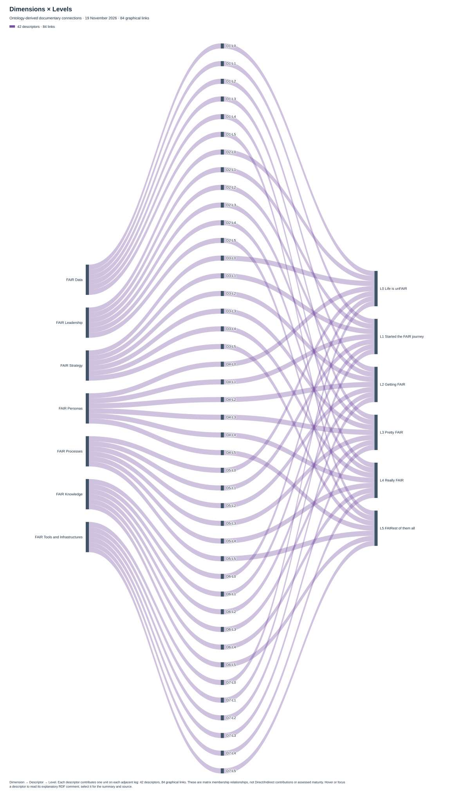

How do the seven dimensions and six ordered levels connect through the 42 contextual descriptors?
Dimension → Descriptor → Level. Each descriptor contributes one unit on each adjacent leg: 42 descriptors, 84 graphical links. These are matrix membership relationships, not Direct/Indirect contributions or assessed maturity. Hover or focus a descriptor to read its explanatory RDF comment; select it for the summary and source.

Interactive diagram · Offline interaction · PNG · SPARQL · Extracted rows